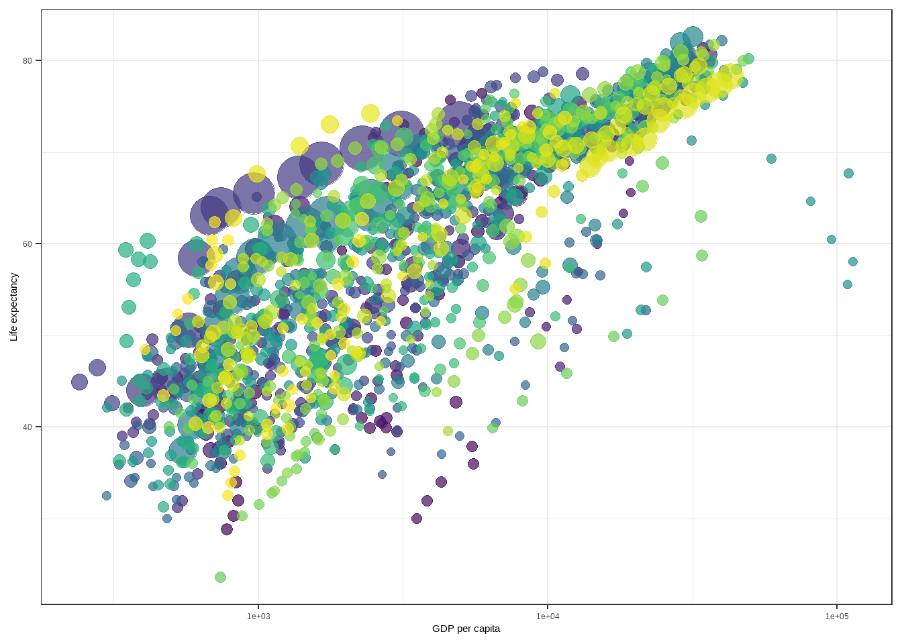
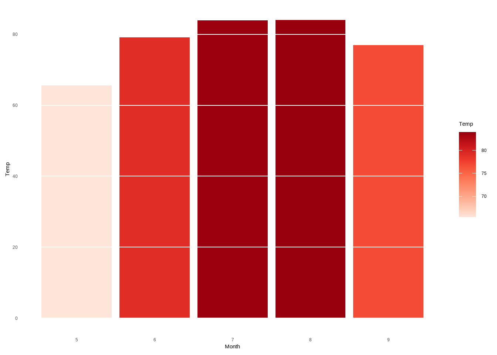
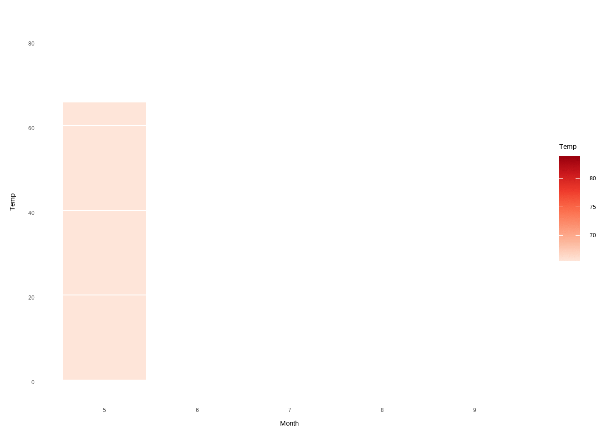

How to Create Plots with Beautiful Animation in R
gganimate extends the grammar of graphics as implemented by ggplot2 to include the description of animation.
Mohammad Hossein Malekpour
Mohammad Hossein Malekpour
Instructions:
This Dotto describes how to create animation in R using the gganimate R package.
gganimate is an extension of the ggplot2 package for creating animated ggplots. It provides a range of new functionality that can be added to the plot object in order to customize how it should change with time.
Key features of gganimate:
- transitions: you want your data to change
- views: you want your viewpoint to change
- shadows: you want the animation to have memory
install gganimate: - install.packages('gganimate') -devtools::install_github('thomasp85/gganimate')
Read more on gganimate official documentation website.
Codes:
# Load required packages and set theme:
library(ggplot2)
library(gganimate)
theme_set(theme_bw())
# demo dataset
library(gapminder)
head(gapminder)
# Static plot
p <- ggplot(
gapminder,
aes(x = gdpPercap, y=lifeExp, size = pop, colour = country)
) +
geom_point(show.legend = FALSE, alpha = 0.7) +
scale_color_viridis_d() +
scale_size(range = c(2, 12)) +
scale_x_log10() +
labs(x = "GDP per capita", y = "Life expectancy")
pResults:
## # A tibble: 6 x 6
## country continent year lifeExp pop gdpPercap
## <fct> <fct> <int> <dbl> <int> <dbl>
## 1 Afghanistan Asia 1952 28.8 8425333 779.
## 2 Afghanistan Asia 1957 30.3 9240934 821.
## 3 Afghanistan Asia 1962 32.0 10267083 853.
## 4 Afghanistan Asia 1967 34.0 11537966 836.
## 5 Afghanistan Asia 1972 36.1 13079460 740.
## 6 Afghanistan Asia 1977 38.4 14880372 786.
Instructions:
Transition through distinct states in time
Key R function: transition_time(). The transition length between the states will be set to correspond to the actual time difference between them.
Label variables: frame_time. Gives the time that the current frame corresponds to.
Check this link for more details.
Codes:
p + transition_time(year) +
labs(title = "Year: {frame_time}")
# Create facets by continent:
p + facet_wrap(~continent) +
transition_time(year) +
labs(title = "Year: {frame_time}")
Results:

Instructions:
Let the view follow the data in each frame
view_follow(): This view will set the panels to include the data present in the frame.
view_follow( fixed_x = FALSE, fixed_y = FALSE, exclude_layer = NULL, aspect_ratio = 1 )
Check this link for more details.
Codes:
p + transition_time(year) +
labs(title = "Year: {frame_time}") +
view_follow(fixed_y = TRUE)
Results:

Instructions:
Show preceding frames with gradual falloff
This shadow is meant to draw a small wake after data by showing the latest frames up to the current. You can choose to gradually diminish the size and/or opacity of the shadow. The length of the wake is not given in absolute frames as that would make the animation susceptible to changes in the framerate. Instead it is given as a proportion of the total length of the animation.
Check this link for more details.
Show the original data as background marks
This shadow lets you show the raw data behind the current frame. Both past and/or future raw data can be shown and styled as you want.
Check this link for more details.
Codes:
# Show preceding frames with gradual falloff
p + transition_time(year) +
labs(title = "Year: {frame_time}") +
shadow_wake(wake_length = 0.1, alpha = FALSE)
# Show the original data as background marks
p + transition_time(year) +
labs(title = "Year: {frame_time}") +
shadow_mark(alpha = 0.3, size = 0.5)
Results:


Instructions:
Reveal data along a given dimension
This transition allows you to let data gradually appear, based on a given time dimension.
transition_reveal(): This transition allows you to let data gradually appear, based on a given time dimension. In contrast to e.g. transition_time() transition_reveal() calculates intermediary values at exact positions instead of coercing raw values into the closest frame. It further keeps old data for path and polygon type layers so that they are gradually build up instead of being a set of disconnected segments as will happen when using transition_time() and shadow_mark() together.
Check this link for more details.
Codes:
# Static plot
p <- ggplot(
airquality,
aes(Day, Temp, group = Month, color = factor(Month))
) +
geom_line() +
scale_color_viridis_d() +
labs(x = "Day of Month", y = "Temperature") +
theme(legend.position = "top")
# Let data gradually appear
p + transition_reveal(Day)
# Show points
p +
geom_point() +
transition_reveal(Day)
Results:
Instructions:
Transition between several distinct stages of the data
shadow_mark(): This shadow lets you show the raw data behind the current frame. Both past and/or future raw data can be shown and styled as you want.
enter_grow() & enter_fade(): The purpose of enter_*() and exit_*() is to control what happens with data that does not persist during a tween. In general the non-persistent data is transformed to an invisible version that can be tweened to, e.g. by setting the opacity to 0 or be moving the element off-screen. It is possible to define your own transformations, or rely on some of the build in effects.
Codes:
# Data preparation
library(dplyr)
mean.temp <- airquality %>%
group_by(Month) %>%
summarise(Temp = mean(Temp))
mean.temp
# Create a bar plot of mean temperature (Static plot)
p <- ggplot(mean.temp, aes(Month, Temp, fill = Temp)) +
geom_col() +
scale_fill_distiller(palette = "Reds", direction = 1) +
theme_minimal() +
theme(
panel.grid = element_blank(),
panel.grid.major.y = element_line(color = "white"),
panel.ontop = TRUE
)
p
# Animated plot
p + transition_states(Month, wrap = FALSE) +
shadow_mark() +
enter_grow() +
enter_fade()Results:
## # A tibble: 5 x 2
## Month Temp
## <int> <dbl>
## 1 5 65.5
## 2 6 79.1
## 3 7 83.9
## 4 8 84.0
## 5 9 76.9